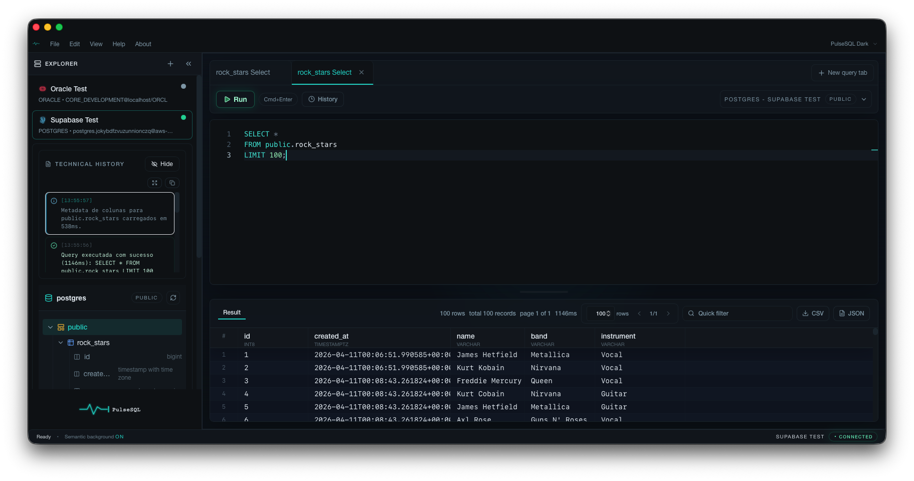

Fast query execution, clean result grids, multi-connection workspace. No bloat. No distractions. Just you and your database.
macOS · Windows · Free & open source

Built around real workflows — writing queries, inspecting data, and switching contexts without losing momentum.
Most database tools try to do everything. PulseSQL does three things well — write queries, inspect data, switch contexts fast.
Free and open source. No account required. Auto-updates built in.
Latest release on GitHub Releases